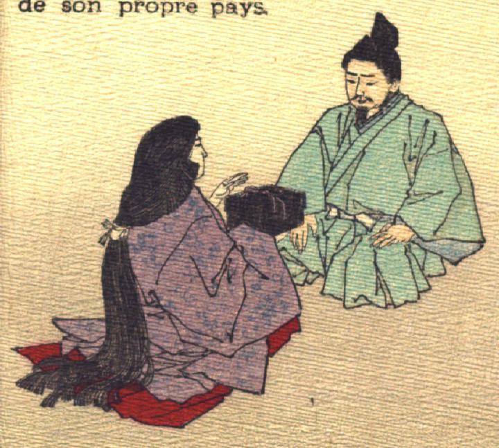

玉手箱を浦島太郎に渡す乙姫。女房装束で、髪を後ろで一つにまとめた乙姫が座って、玉手箱を手に、浦島太郎に話しかけている。
著作者：J.Dautremer／出典：親書誌：U426_nichibunken_0104：Ourasima／日付：2006／資源識別子：U426_nichibunken_0104_0007_0000
Copyright (c)2010- International Research Center for Japanese Studies, Kyoto, Japan. All rights reserved.